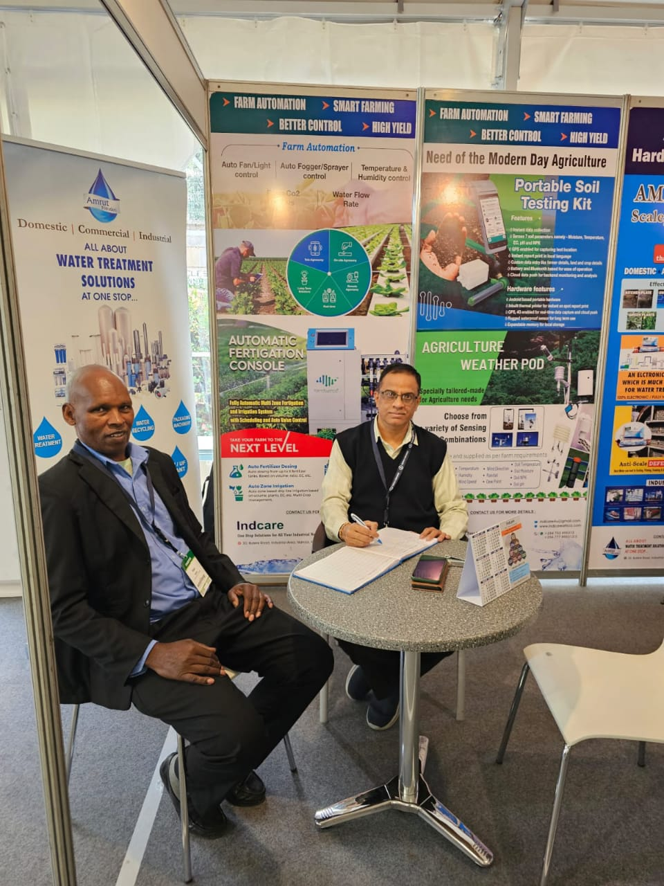
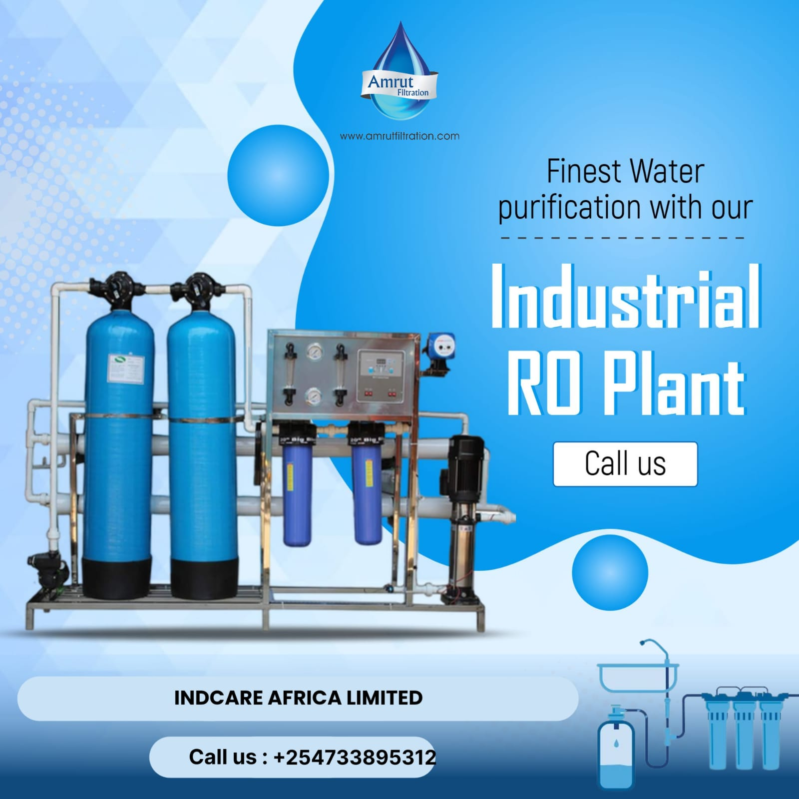
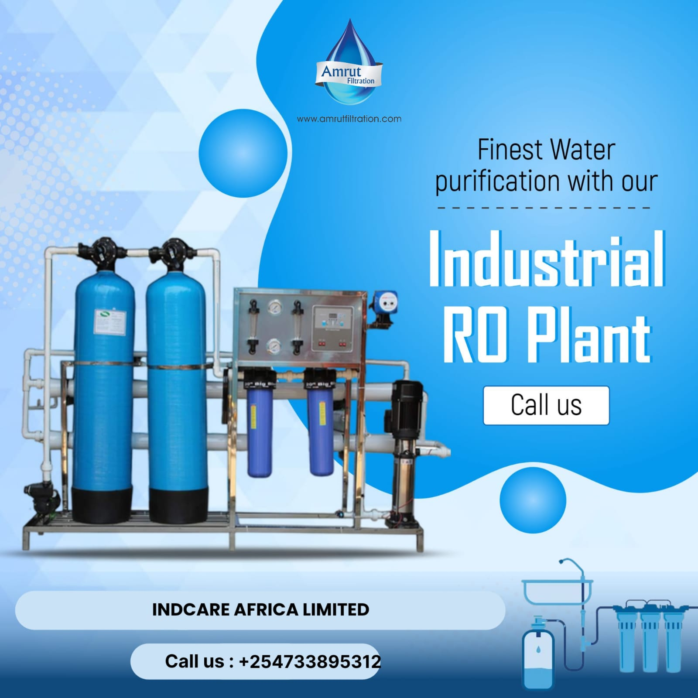

AMRUT 2025 EXPO
Welcome to Amrut Expo 2025
Explore the future of water treatment and sustainable engineering at Amrut Expo 2025.
Welcome to Amrut Filtration and Indcare Africa, two pioneering companies joining hands to create a unique water technology experience at the Amrut & Indcare Africa Expo 2025. This is not just a collaborative event—it’s a convergence of vision, engineering, and impact.
Amrut Filtration is widely recognized for its work in advanced water purification, modular RO systems, ceramic gravity filters, and turnkey industrial wastewater recovery. With over a decade of global operations, Amrut brings precision, durability, and sustainability to every drop of water it touches.
Indcare Africa, based in Nairobi, Kenya, is for customized water treatment solutions. For over ten years, Indcare has been developing and delivering equipment designed for the specific needs of East African homes, agribusinesses, and institutions—from high-fluoride mitigation systems to solar-compatible water stations.
From municipal-scale filtration units to decentralized community water systems, the expo offers a rare opportunity to learn, engage, and co-create better water futures for our homes, farms, and cities.
Whether you’re a government engineer, a sustainability student, a supplier, or a concerned citizen, Amrut and Indcare welcome you to explore this vision of clean, reliable water access. Let this be a starting point for new partnerships, transformative ideas, and shared progress.
Together, let’s filter the future.
 

I Want to Visit
The Amrut Filtration & Indcare Africa Expo 2025 is a pioneering international exhibition that invites the world to Nairobi to explore future-proof technologies in water filtration, purification, and treatment. As a visitor, you will be stepping into a dynamic, solutions-oriented event that is focused entirely on advancing the water-tech agenda for Africa and beyond.
Visitors can expect a wide spectrum of solutions, from municipal and industrial-scale filtration systems to household and community-based purification units. The event spans three days and is structured to provide meaningful access to both technological innovation and real-life applications. Whether you are a local government official, a commercial grower, an NGO program director, or a sustainability-driven homeowner, this exhibition has something directly applicable to your work and community.
Reasons to Attend:
- Hands-On Access: Touch, test, and operate over 150 unique water treatment products, including gravity filters, reverse osmosis units, UV filtration, chlorination systems, pressure boosters, cartridge housings, and pre-filtration skids.
- In-Person Consultations: Have one-on-one discussions with the engineers, technicians, and product managers from Amrut Filtration, Indcare Africa, and other innovative companies.
- Workshops & Panels: Attend sessions on topics like "Water Security in Sub-Saharan Africa," "Low-Cost Solutions for Rural Communities," "Filtration for Flower Farms," and "Integrating Filtration with Solar Power."
- Networking Opportunities: Engage with a diverse audience of 2,500+ visitors from Kenya, India, Tanzania, Uganda, Ethiopia, Rwanda, and beyond.
- Live Installations: Witness full-scale system installations and learn about design, capacity planning, and maintenance from professionals in real time.
Visitors will also benefit from free access to printed directories, digital product brochures, and giveaway kits containing useful field tools and contact databases.
Who Should Visit?
- County Water Officers
- Municipal Procurement Teams
- Agro-Industrial Engineers
- Environmental Scientists
- Health & Sanitation NGOs
- Plant Managers
- Hotel & Real Estate Developers
- Plumbing and Borehole Contractors
- Homeowners looking for modern filtration
Visitor Registration is free until July 20, 2025. Late/walk-in entry will cost KES 500. Group packages and sponsored visitor kits are available for schools, universities, and CBOs.
Email: indcaremkt@gmail.com
Websites: Amrut Filtration | Indcare Africa Products
I Want to Exhibit
Exhibiting at the Amrut Filtration & Indcare Africa Expo 2025 provides an unmatched platform to place your products and brand directly in front of decision-makers from across the East African water and sanitation industry. This event is co-hosted by two trusted names: Amrut Filtration (India) and Indcare Africa (Kenya). Together, they are assembling over 60 companies that represent the most forward-thinking filtration technologies available today.
This is not just a display expo; it's an action-oriented gathering of companies that serve agriculture, industrial zones, hospitals, residential estates, and humanitarian agencies. Exhibitors will be showcasing filtration equipment, pumping systems, chemical dosing units, testing devices, wastewater recycling systems, and mobile water kiosks.
What You Gain as an Exhibitor:
- Direct Access to Buyers: Engage with government procurement officers, county engineers, agribusiness cooperatives, and technical managers seeking vendor partnerships.
- Brand Exposure: All exhibitors are featured on the website, mobile app, printed expo catalog, and video roll during the expo.
- Interactive Booth Features: Real-time demonstrations with power, lighting, internet, water feed, and drain points available.
- Launch Pad: Unveil your newest technology in our Media Theatre.
- Lead Generation: Post-event database of scanned visitors and panel attendees.
Exhibitor Categories Include:
- RO & UF Plants
- Cartridge & Bag Filters
- Water Testing Instruments
- Filter Media & Resin Supplies
- Wastewater & Sewage Solutions
- Rainwater Harvesting & Storage
- Membrane Technology
- Greenhouse Water Systems
Booth Packages:
- Standard Booth (3x3m): $180
- Premium Corner Booth (3x3m): $230
- Outdoor Equipment Zone (6x6m): $300
All packages include back wall branding, table + 2 chairs, electrical socket, lighting, name board, Wi-Fi access, and event directory inclusion. Optional upgrades: LCD screen rentals, plumbing, ad placement, and guest passes.
Exhibitor Onboarding Includes:
- Digital onboarding kit with branding guide
- Virtual pre-event orientation
- Listing in digital and printed directories
- One-page interview on the website and social channels
Email: indcaremkt@gmail.com
Websites: Amrut Filtration | Indcare Africa Products
🧭 Exhibitors List & Floorplan
| Booth | Company | Category |
|---|---|---|
| A01 | Amrut Filtration Pvt Ltd | Industrial Filtration Systems |
| A02 | Indcare Africa Ltd | Residential Water Treatment |
| B04 | HydroTest KE | Water Quality Testing |
| B07 | AquaStore Uganda | Storage Tanks & Pumps |
| C10 | Shakti Pumps (India) Ltd | Solar Pumping Solutions |
| C12 | Water4Africa NGO | Gravity Filter Outreach |
🏨 Hotel Information
| Hotel Name | Distance | Rate per Night (KES) | Booking Code |
|---|---|---|---|
| Sarova Stanley | 4 min | 11,000 | INDCARE25 |
| Nairobi Serena | 7 min | 13,500 | AMRUT2025 |
| PrideInn Industrial | 2 min | 7,500 | EXPOFIL25 |
📸 Photo Impression
Relive the highlights from past events and preview the atmosphere of Expo 2025.
🖼 View gallery & download official impressions
IFTEX 2025 Show Directory
AMRUT FILTRATION & INDCARE AFRICA
📍 Nairobi, Kenya
Show Director – Amrut & Indcare
📧 indcaremkt@gmail.com
📞 +254 711 895312
Indcare Africa, brings over 10 years of experience in organizing East African trade events in sustainability, industrial supply